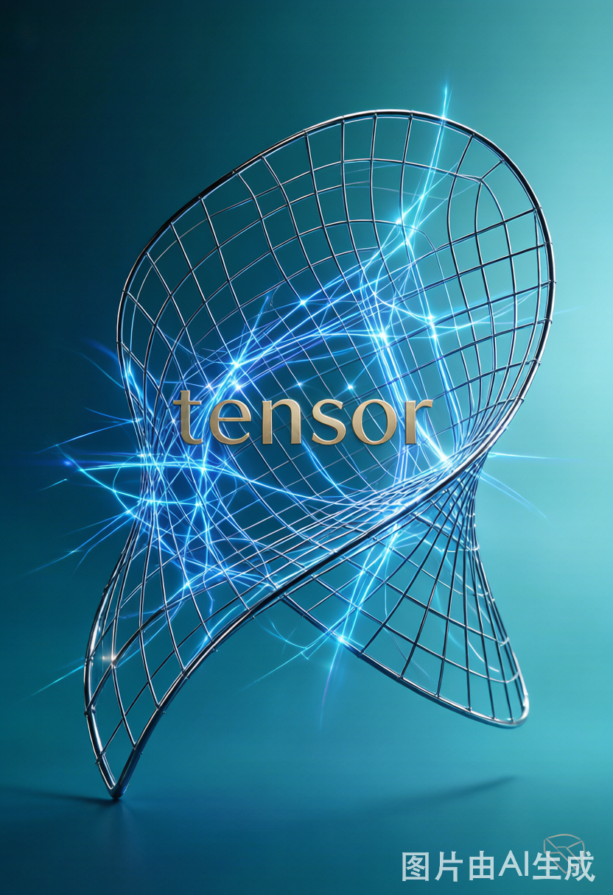
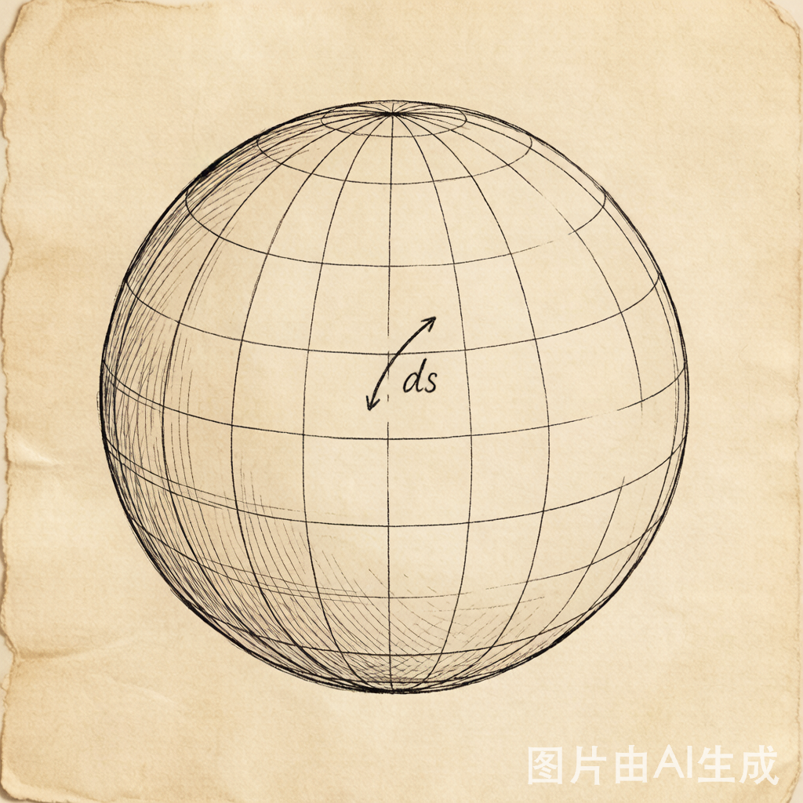
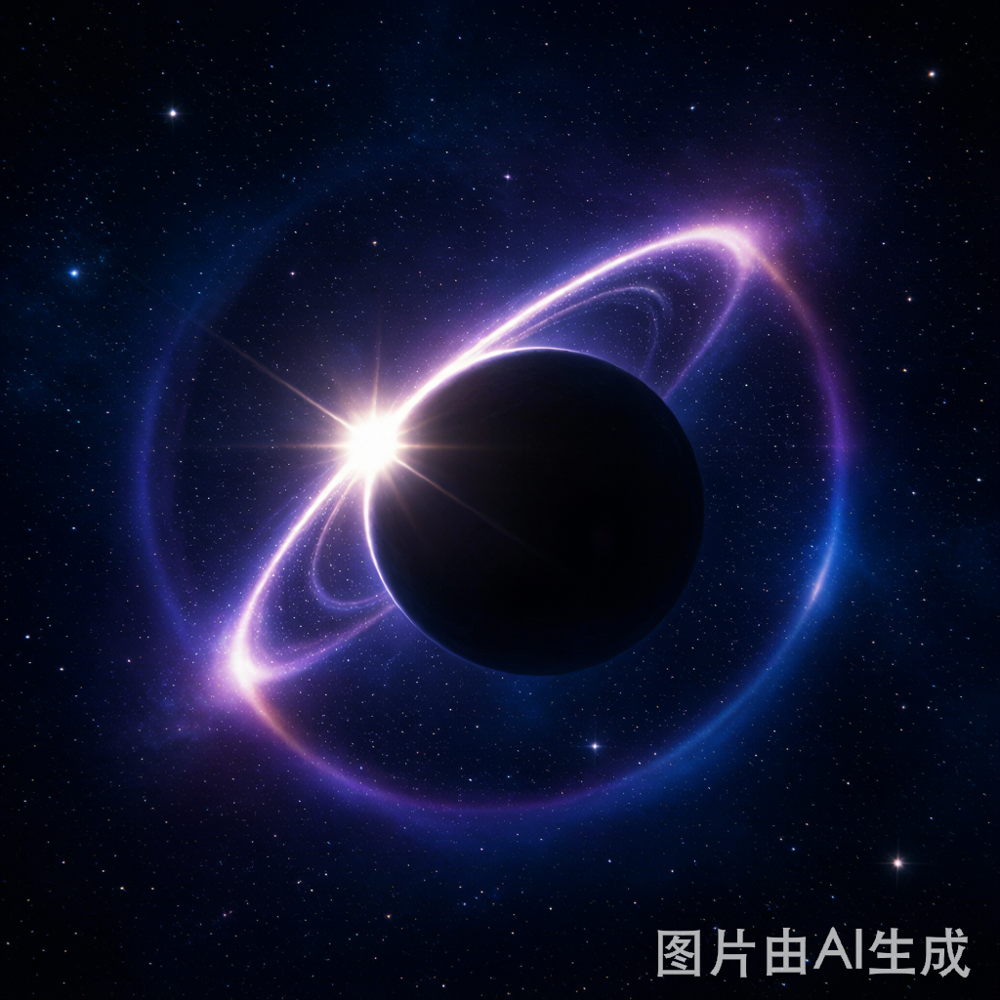
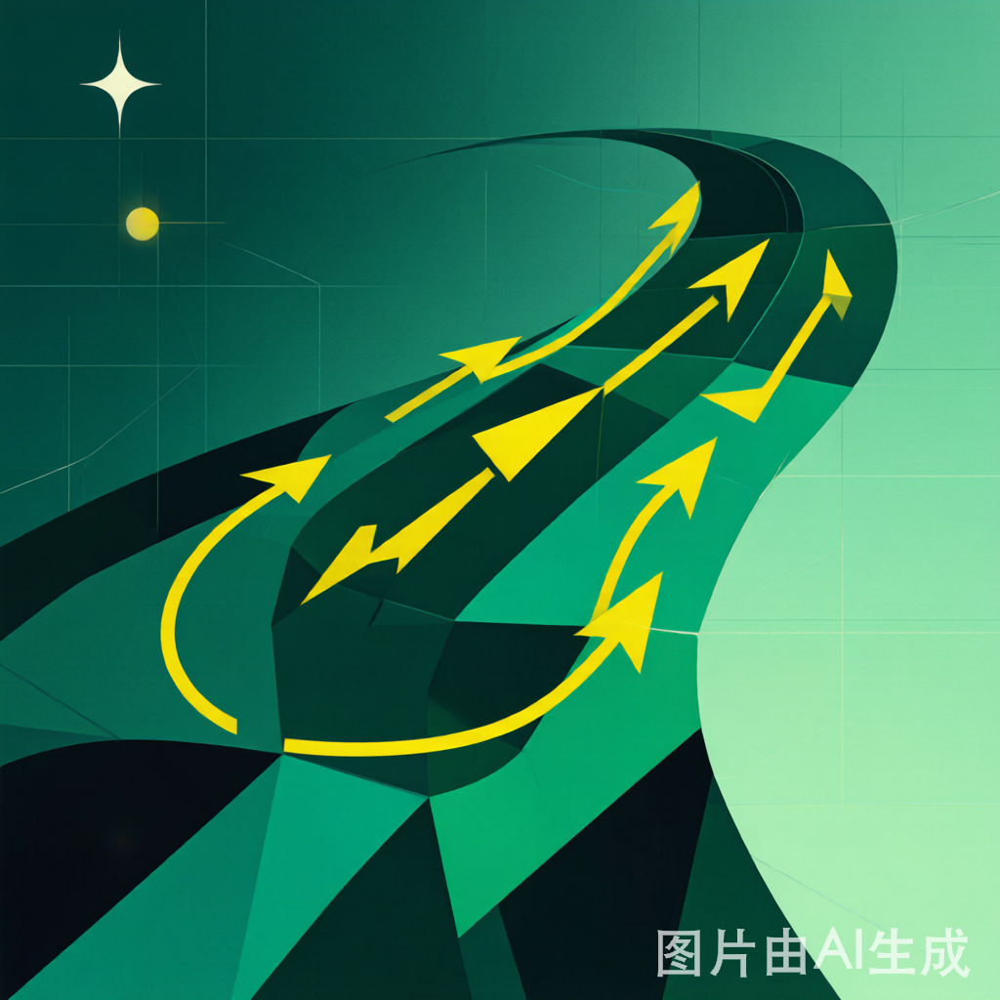

张量的前世今生：一个被"拉伸"出来的数学帝国
你手机里的 GPS 之所以能精确到米级，靠的是广义相对论对时空弯曲的修正；你训练神经网络时天天 import torch，那个 Tensor 更是无处不在。这两件看似不相干的事，背后站着一个共同的幽灵——张量（tensor）。
它既不是向量那样的箭头，也不是矩阵那样的方格，却能把向量和矩阵都收编成自己的特例。更妙的是，这个撑起现代物理与人工智能的庞然大物，名字竟来自一个"借来"的拉丁词，意思是"拉伸"。
今天，我们顺着两百年的时间线，看它如何从一张曲面上的公式，长成一个数学帝国。
一、前世：曲面上的"隐藏密码"
故事的起点，是一场关于"曲面长什么样"的好奇。
1827 年，高斯在《关于曲面的一般研究》里干了一件颠覆性的事：他不再把曲面看作嵌在三维空间里的"肥皂膜"，而是只看曲面自己内部能测量的一切。他写下第一基本形式：
那一堆系数 $(E,F,G)$，其实就是今天度量张量的二维胚胎——它决定了曲面上两点间"真正的距离"，与外面空间无关。
到了 1854 年，黎曼把高斯的想法推进到任意 $n$ 维"流形"，提出黎曼度量 $g_{ij}$ 与曲率。这时一个难题已经浮现：换一套坐标系，这些系数该怎么变，才能描述同一个几何对象？
1869 年，Christoffel 给出了关键一刀。他在研究"二次微分形式如何随坐标变换"时，引入了今天我们称为 Christoffel 符号 $\Gamma^k_{ij}$ 的量，并定义了协变导数——让微分运算在坐标变换下依然"正确"。这，就是张量变换律与协变微分的真正诞生地。

二、一个"借来"的名字
"张量"这个词，原本不属于它。
1846 年，哈密顿在四元数理论里用 tensor 表示四元数的"模长/伸长因子"——源自拉丁语 tendere（拉伸）。直到 1887 年起，意大利数学家 Ricci-Curbastro 发展出"绝对微分学"，才把这个词重新征用，用来指"按特定变换律变化的一组分量的系统"。
1900 年，Ricci 与得意门生 Levi-Civita 在《数学年鉴》发表巨著，系统建立了指标记号、协变（下标）与逆变（上标）的区分、缩并运算。这篇论文是张量分析的"奠基教科书"——可惜当时只在意大利学派内部流传，寂寞了近十五年。
三、引爆：爱因斯坦按下核按钮
转机来自物理学。
1913 年，爱因斯坦与格罗斯曼合作尝试广义相对论，数学部分正靠 Ricci 的绝对微分学。到 1915 年，爱因斯坦写出正确场方程，核心是里奇张量 $R_{\mu\nu}$ 与爱因斯坦张量 $G_{\mu\nu}=R_{\mu\nu}-\tfrac12 R g_{\mu\nu}$。
广义协变性要求：物理定律必须用张量方程表达，这样无论观测者怎么选坐标系，定律都长一个样。一夜之间，张量从"冷门意大利工具"变成物理学的通用语言。

四、几何深化：Cartan 与外微分
1920 年代，Élie Cartan 用"活动标架法"与外微分重写了张量语言。他把反对称的张量单独拎出来，发展成微分形式——这套工具后来成为研究联络、曲率、李群的主力，也延伸到比张量更精细的旋量。
至此，张量在微分几何里彻底安家。

五、代数化：Bourbaki 的"终极统一"
第二次统一更深刻——张量从"变换律"变成了"纯代数对象"。
1948 年起，Bourbaki 在《代数》里用泛性质定义张量积：
$V\otimes W$ 是这样一个空间——任何双线性映射 $V\times W\to X$，都唯一地"升级"成线性映射 $V\otimes W\to X$。
这一下，张量摆脱了坐标与流形，成为抽象代数的公民。而两条定义从此合流：
$(r,s)$ 型张量 = $(V^*)^{\otimes r}\otimes V^{\otimes s}$ 中的一个元素
既是"按变换律变的分量"，也是"多重线性代数里的点"。
后来范畴论把它提升为幺半范畴里的双函子——张量积不再是计算技巧，而是一种结构本身。
六、今生：从力学到深度学习
今天，张量无处不在：
- 连续介质力学：Cauchy 应力张量描述材料内部受力，是工程标配；
- Penrose 图记法（1971）：用弦图代替指标，张量缩并变成"连线游戏"，后来发展为范畴量子力学的图形语言；
- 数值多重线性代数：CP 分解、Tucker 分解把张量当"多维数组"拆解，用于信号与化学；
- 深度学习：
TensorFlow、PyTorch里的 tensor 被世俗化为"多维数组"——这与数学严格定义有距离，但底层仍依赖张量积的线性代数。
尾声：两百年的一条暗线
从高斯曲面上的一组系数，到 Bourbaki 笔下的泛性质，再到你显卡里流动的 Tensor——张量贯穿了两百年的数学史。
它的秘诀其实只有一句话："在变换中保持自身"。物理要协变，代数要泛性质，殊途同归。
所以，张量真正的灵魂，是"在变换中保持自身"。
而当你在 TensorFlow、PyTorch 里写下 Tensor 时，也别被名字唬住——那里的大多数 "tensor" 只是个多维数组，借了爱因斯坦和黎曼的威名壮胆，严格说算不得真正的张量。但正是这份"咋呼"，让两百年的数学语言，悄悄流进了每一块显卡。